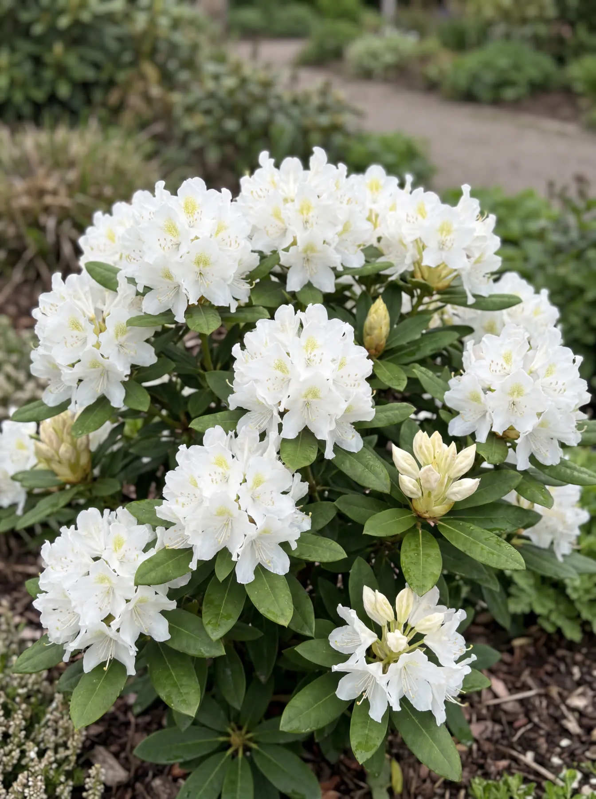

Familiekwekerij · Otterlo, sinds 2001
Wij kweken rhododendrons. Niet meer, niet minder.
Familiebedrijf in Otterlo, op de Veluwe. 10.000 planten op voorraad, direct van het veld naar uw tuin.
Dankzij onze veenrijke bodem en een uitgebalanceerde watergift ontwikkelen onze planten een sterk wortelstelsel. Daardoor passen ze zich moeiteloos aan in uw tuin, met aangroeigarantie.
„Een gezonde plant is geen toeval. Dat is onze standaard.”
- Sinds 2001
- Familiekwekerij in Otterlo
- 10.000 planten
- Op voorraad, vers gerooid
- 7 soorten
- In maten van 40 tot 120 cm
- NAK Tuinbouw
- Aangesloten kwekerij
Aangroeigarantie op elke plant
Niet aangeslagen in het eerste seizoen? Wij vervangen kosteloos.
Vers gerooid, flexibel geleverd
We rooien uw planten vers voor de geplande bezorging of het moment dat u ze komt afhalen.
Persoonlijk advies van de kweker
U spreekt rechtstreeks met de kweker, van vraag tot levering.